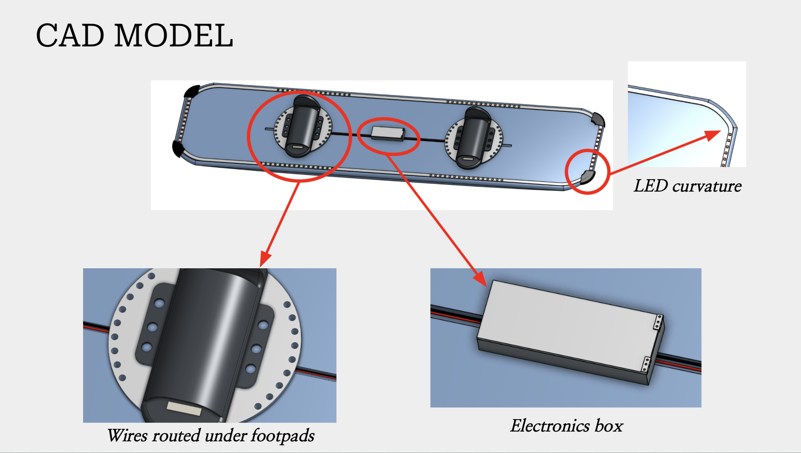
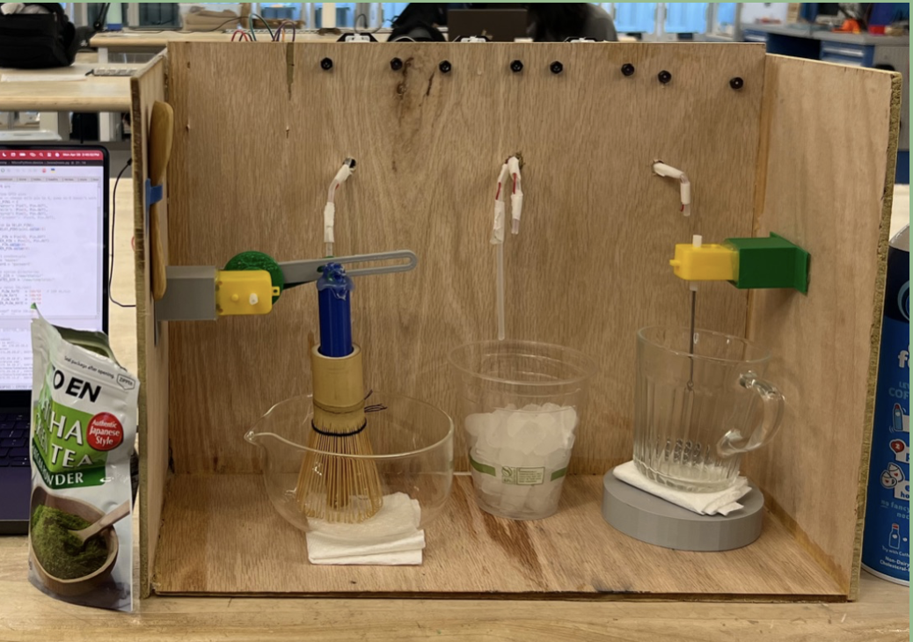
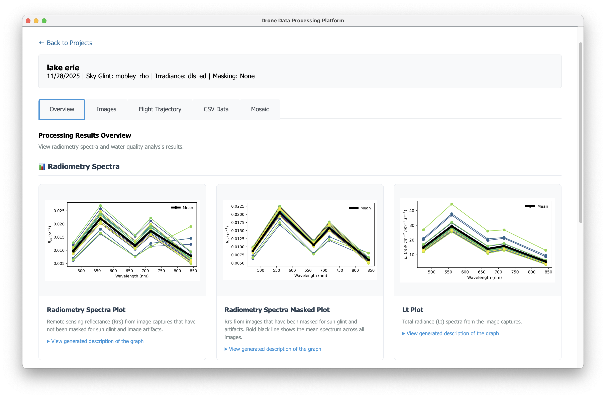

Featured Projects

WavGuard Smart Wakeboard
Product Design • Embedded Systems • PCB Design
Real-time LED feedback system for beginner wakeboarders with custom PCB, 8 FSR sensors, and waterproof design.

Autonomous Navigation Robot
Computer Vision • ROS2 • Sensor Fusion
Indoor autonomous vehicle with LiDAR, RGB-D camera, and IMU achieving 92% detection accuracy.

Matchamatic IoT Drink Maker
IoT Systems • Circuit Design • MicroPython
Automated matcha dispensing system with precision control, reducing preparation time by 50%.

DroneWQ Desktop Application
Full-Stack Development • Python • Electron
Water quality analysis tool processing 1000+ multispectral drone images, reducing analysis time by 97%.